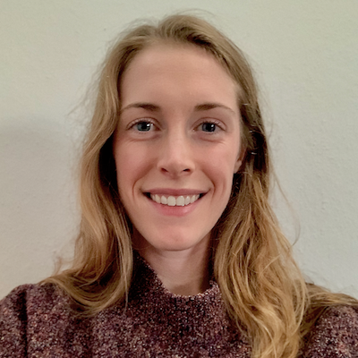

I’m Morgan, a second year systems biology / bioinformatics PhD student in the Forslund Lab at the Experimental and Clinical Research Center in Berlin, Germany.
My academic background consists of a BSc in Pharmaceutical Sciences from Purdue University (2015) and an MSc in Systems Biology from Heidelberg University (2018). Though my curiosity to learn the inner workings of the human body has been the strongest influence of my career decisions, I have nurtured a joy for programming since I first took Java in high school. The past year that has manifest as a deepened interest in data science.
In the next two years I hope to (1) benchmark and advance the statistical methods being widely deployed in microbiome research in order to (2) yield more robust biomarkers for complex disease phenotypes when exploring host-microbiome interactions from clinical collaborations. I do hope to elaborate on this here for different audiences, but for now please check out the lab homepage for more context on my work.
I built this site as a placeto digest and document some of what I’m learning for my research along the way, especially but not limited to statistical analysis in the R programming language.
You can check out some of my code on GitHub, my publications on Google Scholar, or my photography on Cargo.
This website was created using the blogdown package in RStudio.